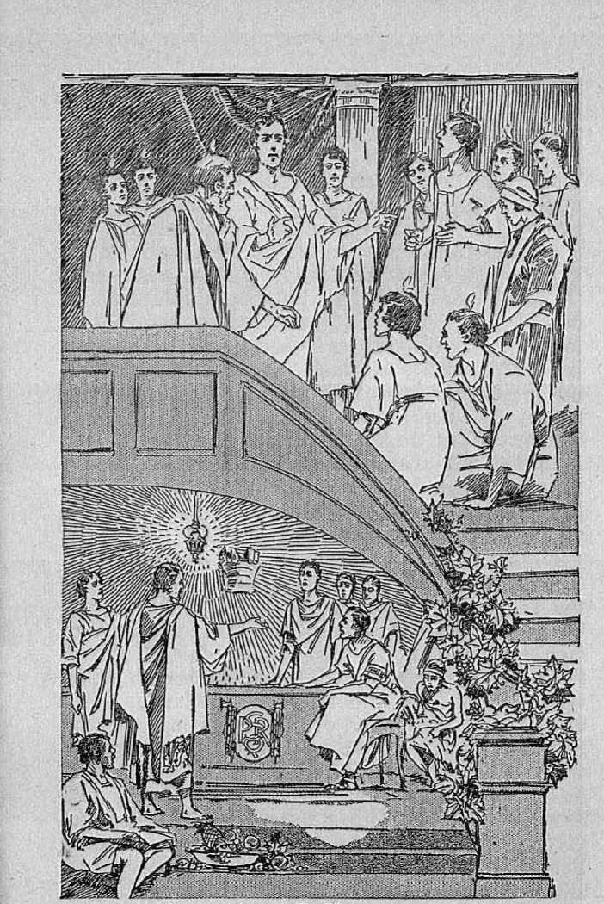
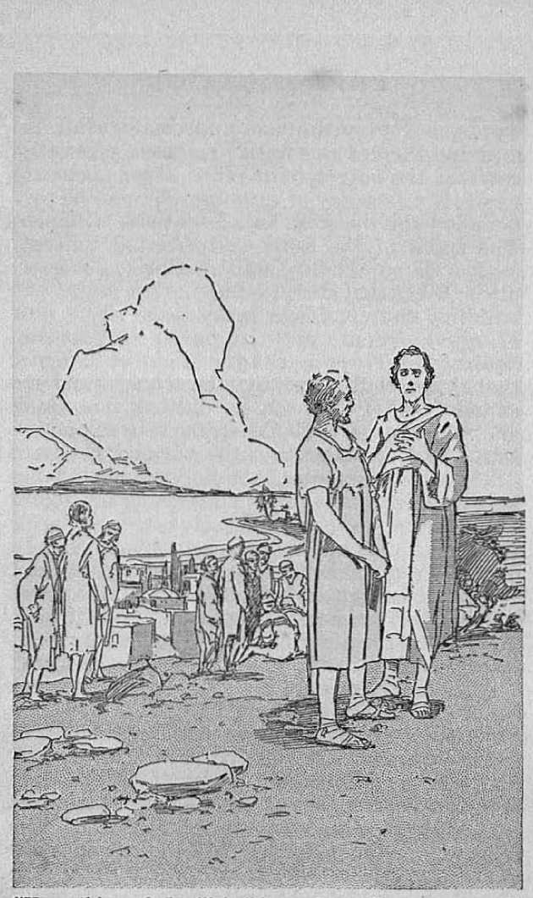
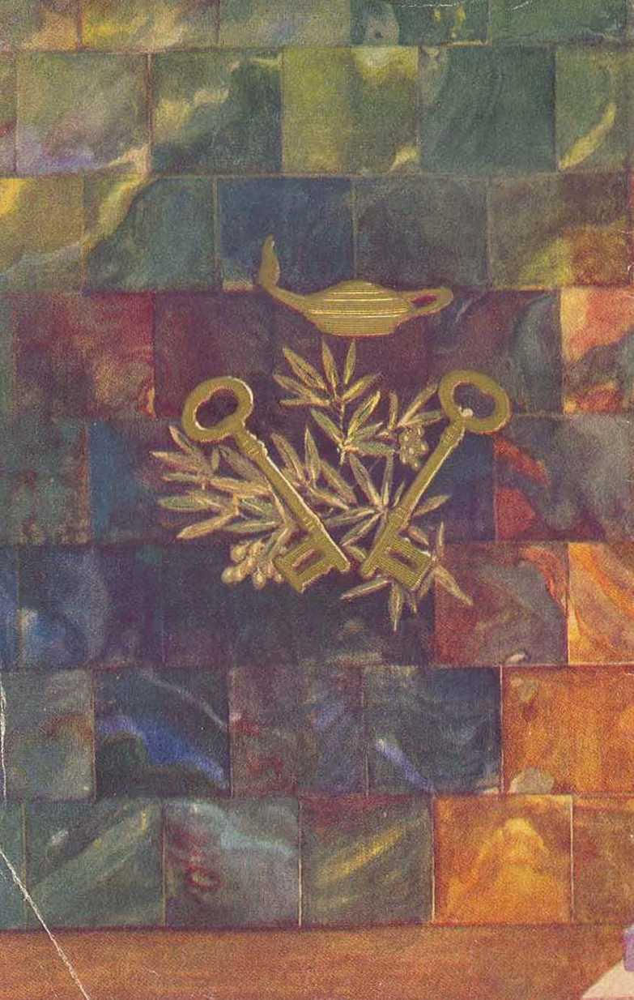
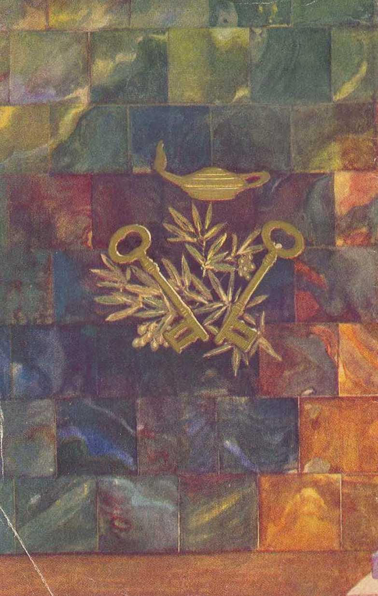

explained in Seven Bible Treatises by
J. F. RUTHERFORD CV; "V0
•>--------------------------------------------------<.
Psge
3 Act of God
10 Oppression
19 Keys of Heaven
28 The Rock
37 Location of the Kingdom
45 The Sabbath
54 The Flood

Not only amongst the Englishspeaking nations of the world have Judge Rutherford’s explanations of the Bible been widely circulated, but his books have been translated and published in more than 50 other principal languages and dialects.
> ——--(•
(lot'YBlOHTISO 1OT2 ZNJ» I'UULWHED BY
W A T C 11 T O W E It
Z HI HER AND TRACT SOCIETY
hitenniUoiinl Bible Students Association
Brooklyn, N. Y., U.S.A.
Branch Offices :
London, Magdeburg, Paris, Toronto. Slratlifhdtl, Cape Town, Berne, Copenhagen, Stockholm, and other cities.
Made in U.S.A.
WHEN a calamity befalls a people it is usual to say that such is 'the act of God’. A great storm causes the rivers to rise, working much destruction of property and people, and this is charged against Jehovah and called 'the act of God’. Public carriers and other corporations protect themselves against damages by inserting in their contracts the statement that they will not be responsible for any damages resulting from 'the act of God’. The courts of law and law writers define ‘the act of God’ as 'an inevitable accident against which ordinary care and prudence could not guard; the interruption of the ordinary course of events such as is not to be looked for in advance’. If a storm wipes away a bridge and a railway train with its passengers goes down, that is said to be an act of God. The question is, Are these things such as I have described the result of God’s acts? I answer, No, they are not; and the claim that such things do constitute the act of God is entirely without Scriptural authority. God is therefore wrongfully charged with such calamities.
Who, then, is responsible for the storms and like extraordinary acts that often result in much 3
suffering to the people? I answer that such are properly chargeable against Satan the Devil; and the reason I shall give from the Scriptures. That Satan has power to produce storms and like unusual things cannot ho doubted. Jesus spoke of Satan the Devil as “the prince of devil ' and as “the prince of this world” and as the one who is the enemy of God and Christ. In Kphcsinns 2: 2 Satan, the prince of this wicked world, is called the “prince of the power of the air’’, In 2 Corinthians, chapter four, Satan is called (lho god of this wicked world*, meaning that he is the invi; ihlo rider of the world having and exorcising p.rcal power. In Hebrews 2:14 it is written that Salmi has the power of death. He has inflicted death upon many persons.
If was Satan the Devil who constantly sought to kill Jesus, because Jesus was the beloved Son of God scnil to earl li to I ell the truth. That Sabin Ims power to produce storms is plainly shown by what he caused to come to pass tignimd. Jei u. and hi:; disciples. They were in a hunt upon the Sea of Galilee and Jesus was asleep in the bout, and a great storm arose, which became so violent that the boat was about io be cupsized. The record in Luke 8: 23-25 is: “So they sei sail. During the passage lie fell asleep, and there came down a squall of wind on the lake, so that the boat began to fill and they were in deadly peril.” (Weymouth) “And they came to him, and awoke him, saying, Master, master, we perish! Then he arose, and rebuked the wind and the raging of the water: and they ceased, and there was a calm. And he said unto them, Where is your faith? And they, being afraid, wondered, saying one to another, What manner of man is this! for he com-mandeth even the winds and water, and they obey him.”
But why should Satan bring storms and like disasters upon the people and cause them to charge the responsibility up to God ? The reason is that Satan has always tried to induce men to curse Jehovah God. If the people could be made to understand that Jehovah God is responsible for these disasters they would hate rather than love him, and this Satan well knows ; hence his course of action. To appreciate this we must get the proper understanding of the great question at issue. When Satan rebelled against God he induced man to sin by telling him that God is a liar. He then defied Jehovah God, saying that no man could be put on the earth who under great stress would be faithful to God. In order that all creation might in due time be fully convinced that Jehovah is the only true God, from whom blessings come, Jehovah permitted Satan to go his full limit in wickedness. In due time he will destroy Satan and all his power. For this reason the book of Job is written in the Bible. In the book of Job, which is fully explained in the book brought to your doors and which is called Life, the record is that Job was a very rich man who served God faithfully. Satan declared that he could compel Job to curse God, and was permitted to try. Satan brought a great windstorm which destroyed Job’s house and killed all his children and most of bis servants. Then he brought other calamities upon Job. He afflicted Job with boils and then brought three pious-faced religionists who claimed to be Job’s friends and who tormented him for days. Ue induced Job’s wife to call upon him Io curse God. Amidst all this Job remained true and faithful to God, and Satan failed in his efforts.
For the same purpose Satan has caused the people to be taught for many centuries that all the storms, the bugs, and insects, and like things that bring disaster upon the people come because the people have not contributed to their church and been faithful to it, and hence God is displeased with them and sends calamities. Many persons have thereby been induced to curse God and turn away from him. In duo time Jehovah God will bring to pass events that will surely convince all creation that Satan is the wicked one and that Jehovah God is the Giver of life ami happiness to those that serve him.
What, fhmi. is IIip proper understanding or explanation of the words “act of God”? The Bible truly says that all the works of Jehovah are perfect, and that all his ways are good and just, right and true. God is love; which means he is entirely unselfish. He does punish wickedness and declares that he will completely destroy the willfully wicked, and this he has done and will do for the honor of his name and for the good of those who love righteousness.
Some of the acts of Jehovah God recorded in the Bible are these: Because of Adam’s willing disobedience he sentenced him to death, expelled him from Eden and put him to death. The children of Adam, acting with a host of the Devil, filled the earth with violence, and the record is that God sent a great deluge and destroyed all flesh upon the earth except Noah and his immediate family, who were faithful to God. That great deluge was an act of God; but before he performed it he gave full notice, so that it could not be said that it was an inevitable accident against which ordinary care and prudence could not guard.
The Egyptians under the rulership of Pharaoh and his associates greatly oppressed God’s chosen people the Israelites. They cried unto God and he led them out of Egypt by the hand of Aloses, and when the Egyptian army pursued the Israelites for the purpose of destroying them God destroyed the Egyptians in the Red sea. That was an act of God. It was not, however, an inevitable accident against which the Egyptians could not guard and about which they could not know, because God had previously given full notice to the Egyptians of his purpose to punish them if his people were further persecuted.
When God’s people the Israelites were marching to Canaan the Amalekites wickedly persecuted them, and in his own due time God sent his army under Saul against the Amalekites and they were destroyed. That was an act of God,, but it was not an inevitable accident against which the Amalekites could not guard, because for four hundred years notice had been given that they should suffer for their wicked persecution of God’s people.
'I’he Jews, once God’s chosen people, turned away to the Devil mid against Jehovah God. They were unfaithful to their covenant and became idolatrous. In due time Jehovah God permitted the armies of Babylon to lay siege to Jerusalem and to cause millions of the people to die by the sword, by famine and pestilence, and the city to be completely destroyed, That was an act of God, but it was not an inevitable accident that could not be looked for in advance and against which prudent men could not guard themselves. On the contrary, Jehovah God sent his prophets Ezekiel, Jeremiah and Isaiah and others to the Jews and gave them full warning of his purpose to punish them for their wickedness, and in due time he did punish them. An net of God, therefore, is not *an inevitable accident. that cannot be looked for in advance’ according to (he definition given by worldly wise men,
I’he Scriptures conclusively prove that God never takes advantage of his enemies by bringing upon them a disaster which they could not know of in advance; and this is further proof that all such calamities are from Satan, the enemy of God. Satan causes these to be charged against God for the very purpose of turning the people away from Him.
Now the Scriptures make it clear that another great and mighty act of God shall soon come to pass. The Scriptures describe it as a “st range work" aud a "strange act" and add that in the progress thereof the wisdom of the worldly wise men shall perish. In Isaiah, chapter 28, it is written: “For the Lord shall rise up as in mount Perazim, he shall be wroth as in the valley of Gibeon, that he may do Iris work, his strange work; and bring to pass his act, his strange act. Now, therefore, be ye not mockers, lest your bands be made strong” By the words of his prophets Jeremiah and Ezekiel God declares that he will completely wreck “Christendom” and that there will be so many dead persons as the result of his “strange act” that the living will not be able to bury them. By his prophet Habakkuk the Lord tells of how he will march his army through the land and desolate it and that he will thrash the nations in his anger and that so terrible will be the spectacle and power of Jehovah exhibited that the sun and the moon shall stand still, and then all shall know that it is the act of God.
That great act of God will not be as the worldly wise men have delined it: an inevitable accident against which prudent persons cannot guard. Just at this day Jehovah God is sending his witnesses throughout the land with his message of warning to “Christendom”, telling of the great and terrible strange act that is just ahead. That message of warning he has caused to be printed in millions of books and in many languages, and these are given a wide distribution throughout the land called “Christendom”. God is causing notice now to be served upon the rulers, and particularly upon the clergymen, in order that their mouths may be for ever estopped from saying that "there came upon us an inevitable disaster which we as prudent men could not know about in advance*. The responsibility is upon God’s witnesses to now take tins message of warning to the people, and then the responsibility is upon those to whom it is brought to give due and proper consideration to that message. Refusing to hear the message and destroying the books that contain the message will furnish no excuse to anyone to ever say that he did not know that this great act of God was about to be performed. Armageddon is rapidly approaching, and Jesus described it as the greatest trouble that ever came upon the world or ever will come again. Both Jesus and God’s other prophets declared that in that trouble the remnant of people who are of good will and honest heart, and who will hear and heed the message of warning and lake their stand on (he side of Jehovah, will be preserved and taken through the trouble. Be wise and give a henring car. May it please you to do so and receive the protection and blessings of Jehovah.
TO MERELY recount the oppressions that are upon the people and from which they suffer could result in no good. If, however, the people can ascertain the cause of such oppression and suffering, and how it is going to end and when the people will get complete relief, that will bring comfort to many that now mourn. It is the duty and commission of every one who is fully devoted to God to comfort those who mourn, and such is the purpose of these radio speeches. This is not a message of comfort coming from man, but it is merely telling the people where in God’s Word it holds out to them comfort and the blessings they have so long desired.
The United States is the richest country under the sun. The material wealth of this land far surpasses anything that Solomon ever had, and yet there are millions of people in this land who are in great need of food and raiment. The farmer, who with much expense and laborious effort raises his crop of wheat, must go to the market and sell it for less than it cost him. The poor laboring man who lives in the city needs the same wheat, and yet he is compelled to pay more than four times the price that the farmer receives. Someone is reaping profit from that upon which he has bestowed no labor. The farmer has a heavy7 mortgage on his farm, and on this he is required to pay a liigh rate of interest. He must also pay his taxes. Unless he pays the interest and the taxes he loses not only his labor but his home. He suffers greatly under the oppressive burden and despairs of relief. He has several children whom he loves dearly and ho looks upon them with pity and sorrow. He sees nothing in the future for them. The government continues to spend his hard-earned money to build war ships, airplanes and other instru-inputs of destruction, and fails to furnish any relief.
The man who labors in the factory or shops tries to conserve his earnings and to save for a time of even greater need. He deposits his money in some bank for the purpose of saving it. The bank is improperly and criminally managed, it fails, and his savings are swept away. His wages are reduced or his job is taken away from him and he has neither work nor money for himself and family. He secs the oppressive and cruel hand over him, but he does not know how he can get any relief therefrom.
The merchant for a time carries on a legitimate business out of which he earns an honest living. A gigantic corporation appears on the scene, undersells the small merchant until he is driven out of business and into bankruptcy, and then raises the price of what the people have to buy. In the end the small merchant passes out of existence and the people suffer. Both the merchant and his customers are oppressed by gigantic corporate power.
In recent years the tendency has been to concentrate the wealth and the power in the hands of a few. Today a few men who are exceedingly rich control the financiers of the land, the manufacturing interests, the public press, the food supply, and public officers, and in fact everything, while the masses .of the people suffer under great oppression, and they are on the verge of despair. Every man’s hand seems to be against his neighbor, selfishness holds sway, and seldom do we see one that is anxious to render aid to his fellow creature.
What do these distressing conditions indicate? The answer is found in the Scriptures and shows that exactly these conditions wore foretold by the Lord and that they would come to pass upon the earth “in the last days”; In 2 Timothy, third chapter, it is written: Tn the last days grievous times will set in, men will be lovers of self and lovers of money, and will oppress their fellow than? To whom is the blame properly laid for these times of peril, oppression and suffering that are laid upon the people? The religious leaders of the land tell their congregations that God is sending such time of stress upon them because they have not faithfully supported their church organization. The people hearing this curse God and turn away from him. But is Jehovah God responsible in any degree for the suffering of the people now? Most emphatically no. Jehovah God is love. Who, then, is responsible, and who is the great oppressor of mankind? The Scriptural answer is that Satan the Devil is the great oppressor. For centuries he has been the invisible ruler of this world. He has influenced and induced men to grow exceedingly selfish and to oppress each other and then caused these conditions to be charged against God, the purpose being to drive, the human race into desperation and turn them away from the great and loving Jehovah. Those who compose the ruling powers of this world Satan has used as his instruments to oppress the people in general. He uses the religionists to tell the people that which turns them away from God and his Word. Jehovah through his great Prophet shows that in these last days Satan would be cast out of heaven and down to earth and then he would make the burdens of the people greater. In Bevelntion, chapter twelve, it is written: ‘Woe to the inhabitants of the earth 1 for the Devil is come down unto you, having great wrath, because he knoweth he hath but a short time? Satan’s time to turn the people against God is short*, as he knows, and he is using every desperate means in an attempt to accomplish his purposes.
The Bible abounds with proof that Jehovah is the Friend of the oppressed. I here quote a few texts in support of this statement. Psalm 9:9: “The Lord also will be a refuge for the oppressed, a refuge in times of trouble.” Psalm 10:17,18: “Lord, thou hast heard the desire of the humble; thou wilt prepare their heart, thou wilt cause thine ear to hear: to .judge the fatherless and the oppressed, that the num of the earth may no more oppress.”
That the people of good will now on earth might learn that Jehovah is the God of mercy who will aid the oppressed he instructs them in Ids Word to pray, as set forth in Psalm 119: 133,134,121, to wit: “Order my steps in thy word; and let not any iniquity have dominion over me. Deliver me from the oppression of man; so will I keep thy precepts. I have done judgment and justice; leave me not to mine oppressors.” »
The promise of Jehovah God is that in due time he will hear the cries of the oppressed and fully and completely relieve them from their distresses. In Psalm 72:4 the Lord gives this precious promise: “He shall judge the pool1 of the people, he shall save the children of the needy, and shall break in pieces the oppressor.”
When and how will Jehovah God break the power of the oppressor and grant relief to the people ? The Bible answers that this lie will do by Christ his King, that he will break the oppressor in the great battle of Armageddon just ahead, and that then the blessings will flow out to the people who obey the righteous laws. Jehovah lias permitted the Devil to go his limit in wickedness because of his defiance and challenge to the Almighty God. But the end of his way has come, and when his power is destroyed all will see that Satan is a fraud and a snare and that Jehovah is the true and loving Friend of mankind from whom all blessings flow.
Satan has laid hold upon the selfish men of the earth, who are more astute and powerful than other men, for his instruments for oppression. A few of these have grown very rich by means of fraudulent practices against those who produce the wealth. When Satan’s power is destroyed, no longer can such men act as agents or representatives of Satan and no longer will they be permitted to oppress anyone. Christ Jesus lias now come and taken his power and begun his reign. Me has cast Satan out of heaven and now Satan’s power to oppress the people will soon and for ever end.
The facts well known show that since 1914 great corporations have increased their power many fold and in that proportion the people have suffered oppression. The’ men who bestow the labor to produce the wealth of the land receive little of it. They grow poor, while scheming and selfish men grow exceedingly rich. These poor ones suffer under the oppression and they cry unto God, and their cries are now heard and God will shortly act; therefore it is written, in James 5:1-4: “Go to now, ye rich men, weep and howl for your miseries that shall come upon you. Your riches are corrupted, and your garments are moth-eaten. Your gold and silver is cankered; and the rust of them shall be a witness against you, and shall eat your flesh as it were fire. Ye have heaped treasure together for the last days. Behold, the hire of the labourers who have reaped down your fields, which is of you kept back by fraud, crieth; and the cries of them which have reaped are entered into the ears of the Lord of Sabaoth.” Here the Lord God is referred to as the God of battle, because in the great battle of Armageddon he will completely wreck the oppressor and all of his organization and bring everlasting relief to suffering humanity.
This great relief Jehovah will accomplish ■ shortly, when the power of Christ Jesus will destroy the wicked oppressor and all wickedness and lift the people out of despair. Not only will his kingdom destroy the oppressor, but Christ will rule in righteousness and the poor will have an equal show with those who have heretofore enjoyed plenty. One of the names Jehovah has given Christ Jesus is that of “Shiloh’which means the Peaceful One. He is the great Prince of Peace, and in righteousness shall he rule. In the prophecy written at Genesis 49:10 concerning this great and righteous King it is said: “Unto him shall the gathering of the people be." With gladness and joy will the people seek his kingdom. Concerning that time and the blessings that will come to mankind God’s prophet wrote (Psalm 103:6): “The Lord executeth righteousness and judgment for all that are oppressed." The oppressed millions of earth have longed for the coming of the day of relief. The apostle knew, of course, that such relief and blessings can come only through God’s kingdom and that those who will thus rule in righteousness are the sons of God. Therefore he wrote, in Romans 8:22,19: “For we know that the whole creation groaneth and travaileth in pain together until now. For the earnest expectation of the creature waiteth for the manifestation of the sons of God."
In the Scriptures the cruel and oppressive corporations and ruling powers are described under the symbol of a beast, while the Devil himself is pictured under the symbol of a lion, the king of the beasts. Concerning the kingdom of the Lord and the happiness that will then be the portion of the people it is written (Isaiah 35:9): ‘No lion shall be there, nor any ravenous beast shall be found there.’ This means that Satan and his oppressive agents are gone for ever. Then the people will have a plain and unhindered way to travel in righteousness and return fully to the Lord and be restored. Then every man shall have his own house and sit under his own vine and fig tree and shall not he afraid that someone will take this away from him. He may see his children grow up in happiness and prosperity and know that never again shall the oppressive hand be laid upon them.
In this day of oppression the idle rich revel in what they have not produced, while millions suffer for want. God’s kingdom will entirely change these conditions, because it is written in his Word, in Isaiah, chapter twenty-five, that in his kingdom the Lord shall provide plenty and shall spread a feast for the benefit of all mankind ; he will remove blindness from their eyes, and give them a full knowledge of that which is right and bring them what every honest heart desires. Some of the good resulting to the people is described in these words (Isaiah 25:8,9): ‘“lie will swallow up death in victory; and the Lord God will wipe away tears from off all faces; and the rebuke of his people shall he take away from off al! the earth; for the Lord hath spoken it. And it shall be said in that day, Lo, this is our God; we have waited for him, and he will save us; this is the Lord; we have waited for him, we will be glad and rejoice in his salvation.”
Jehovah’s witnesses are now coming to you with the plain explanation of the Bible prophecies, that you may learn for yourself that Jehovah is the great God of righteousness and truth and your real Friend. The books that they bring to your attention show you where to find these great truths in the Bible, that you may prove to yourself how relief is coming. Gain this knowledge and take courage and know not only that Jehovah God has promised relief, but that relief is near at hand.
CHRIST JESUS, the mighty Son of God, had twelve apostles, among whom was Peter. From the divine record appearing at Matthew 16:19 the words of Jesus addressed to Peter are as follows: “I will give unto thee the keys of the kingdom of heaven : and whatsoever thou shalt bind on earth shall be bound in heaven; and whatsoever thou shalt loose on earth shall be loosed in heaven.” Millions of persons now on earth have in all good conscience been led to believe that these words of Jesus prove that Peter was the first pope and was given supreme authority over the church and that the bishops of Rome have been his successors in office and therefore have supreme authority over the Christians of the earth. The Scriptures do not at all support such a conclusion. Surely all good people want to have the truth, and by the Word of God alone can we obtain the truth.
The supreme and absolute authority over the church resides in Jehovah God; as it is written in 1 Timothy 3:15: "The church of the living God.” God made Christ Jesus the Head over his church, which is the body of Christ; as it is written, in Colossians 1:18: ‘Christ is the Head of the body which is the church.’ At Ephesians 5:23 it is written: “Christ is the head of the church: and he is the saviour of the body.” These scriptures conclusively prove that the supreme authority is in Jehovah God and that •» he has made Christ Jesus the Chief One or Head of his church. “The church” means the class that is separate and distinct from the world. This proves that the conclusion announced that Peter was given supreme authority over the church is entirely wrong, and also conclusively proves that no man has ever succeeded Peter as the chief one in authority over the church. What, then, did Jesus mean when he said to Peter: «I will give unto thee the keys of the kingdom of heaven”?
In the Scriptures the word keys is used symbolically to represent the privilege of unlocking hidden truths and receiving an understanding thereof. On another occasion Jesus used the identical word key to show its meaning. The Pharisees and doctors of the law constituted the clergy and leaders of the Israelites. It was incumbent upon them, and therefore their privilege and duty, to expound God’s law to the people. They were unfaithful to God, fell into ignorance themselves concerning the kingdom, and took away from the people the opportunity to understand God’s purposes. For this reason Jesus said to them, as the record at Luke 11: 52 reads: ‘You have taken away the key of knowledge. You entered not the kingdom yourselves, and you have hindered others from entering? The favor which these clergymen might have had Jesus conferred upon Peter, giving to him the keys of the kingdom of heaven, which Jesus told Peter he should have and which clearly meant that Peter in due time should be given understanding of the kingdom of heaven. Other scriptures fully corroborate this conclusion.
The kingdom of heaven was a mystery hidden from the understanding of men for many centuries. The proof of this is found in the Bible, at Colossians 1:26,27, which says: 'The mystery of the kingdom of heaven which was hidden for ages and generations, but now is made known to his saints? Primarily the kingdom of heaven means the royal house of heaven, and consists of Christ Jesus and the 144,000 members of his body. For more than four thousand years this great truth was a hidden mystery, and the disciples of Jesus did not begin to understand it until after his ascension into heaven and until the coming of the holy spirit at Pentecost. When Jesus was with his disciples on earth he spoke to them in parables and dark sayings. These words appear in Matthew* chapter thirteen: Without a parable spake he not unto them, in order that the prophecy might be fulfilled, saying, I will utter things which have been kept secret from the foundation of the world? It was God’s purpose to have this mystery revealed some time, and therefore Jesus told Peter that he had been selected as the one who would have the privilege of first knowing the mystery concerning the development of the kingdom of heaven. Jesus gave to Peter these keys, which means the privilege to unlock these truths for himself and for his brethren in Christ.
Note that the word keys is in the plural and shows more than one. The facts which subse-cpiently appear in the Bible show that there were two keys, and that they were, to wit, (1) the first key showing God's purpose to take out from the Jews some of the church or kingdom of heaven company; and (2) the key disclosing God's purpose to take out from the Gentiles or non-Jews a part of those which shall compose the kingdom of heaven class.
When these keys or privileges were given to Peter and he used them there could be no such thing as a successor to him. There is no Scriptural proof that Peter ever had a successor in this. The privilege was granted to him exclusively. lie performed the privilege and duty of unlocking these mysteries, which he did by the grace of God. Now please note from the Scriptures how he did this.
Peter and the other disciples thought that Christ Jesus was going to set up the kingdom with the Jews while he was on earth, and this is proven by their words spoken to him on the very day of his ascension into heaven. They said, as appears in Acts 1:6: “Lord, wilt thou at this time restore again the kingdom to Israel?” The answer of Jesus to that question was that the disciples should wait at Jerusalem until they had received the holy spirit and then they would know about the kingdom. Ten days later was Pentecost, aud it was then at Jerusalem when Peter received the first of these keys. It was there revealed to him by the holy spirit for the first time what is the mystery of the kingdom of heaven. The second chapter of Acts of the Apostles tells of Peter’s standing up and speaking to his brethren and telling them the meaning of the death and resurrection of Jesus Christ and the beginning of the kingdom. Peter then, under the inspiration of the holy spirit of God, told the people that Jesus Christ was the approved one of God and the great Messiah or King for whom they had looked, that the Jews had put him to death and that God had raised him up out of death and had anointed him and appointed him to be King. Then Peter added these words: 'Therefore lot all the house of Israel know assuredly that God has made Jesus both Lord and Christ, the anointed King.’ It was then and there that Peter used the first key committed to him by Jesus Christ to unlock to the Jews the mystery of the kingdom of heaven. He told them that God would send Jesus Christ again, whom the heavens must retain until the time of the setting up of the kingdom and the restoration of all tilings, and about which all the holy prophets had written.
For three and one-half years thereafter the apostles preached the gospel of God’s kingdom to the Jews exclusively. Then the Lord handed to Peter the other key by which he unlocked the mystery of the kingdom to the non-Jews or Gentiles. Peter was then at Joppa. The Lord caused to be revealed to him in a vision that
the gospel must be taken to the Gentiles. At the same time Cornelius, a Gentile, had been praying to God. The record at Acts 10:4, 5 is that the Lord by his angel said to Cornelius: ‘Thy prayers and alms are come up as a memorial before God, and now send men to Joppa and call for Peter? Then Peter went to Cornelius, and Cornelius told him of a vision that he had received by the angel of the Lord. Note now at Acts 10: 34, 35 the words of the apostle: “Then Peter opened his mouth, and said, Of a truth I perceive that God is no respecter of persons; but in every nation he that feareth him, and worketh righteousness, is accepted with him.”
Later Peter in conference with the other disciples told them that God had visited the Gentiles, given them the gospel for the purpose of taking out a people for his name, and that these together with the Jews would constitute the kingdom of God under Christ. Thus was made clear by the second key, which Peter received from Christ Jesus, the mystery of the kingdom concerning the Gentiles.
There can be no such thing as a successor to Peter in this, because he had finished and completely used those keys by unlocking and making known God's purposes to take out the kingdom of heaven class from both Jews and Gentiles. For the purpose of confusing many and for the purpose of turning the people away from Jehovah, and to induce them to give their devotion to some creature, Satan by fraud and deception has induced many good persons to believe that Peter has had successors and that
Peter uses the first key A.D. 33
Peter uses the second key A.D. 36 Page 23
। . -to the successor in office has been granted supreme authority in the church. This is plain blasphemy and is another proof of the means which Satan employs to use “organized Christianity” to deceive and mislead the people.
At the time of speaking to Peter about the keys of the kingdom of heaven Jesus also said: “Whatsoever thou shalt bind on earth shall be bound in heaven, and whatsoever thou shalt loose on earth shall be loosed in heaven.” Men have wrongfully claimed that this constituted authority gave to other men in the church the power to forgive sins. Such claim is entirely wrong. What Jesus meant, as plainly appears from the Scriptures, was that the acts of Petei' in unlocking these mysteries of the kingdom of heaven both to the Jews and to the Gentiles would be fully confirmed by the Lord.
No man has ever been granted the power to forgive sins. On the contrary, it is plainly written in 1 John, chapter one, that God through Christ Jesus forgives sins and there is no other means provided. In fact, Peter himself stated there is no other name given under heaven aside from Christ Jesus whereby we may be forgiven and saved. The Word of God has been misrepresented to the people, and men have commercialized and wrongfully used it to take from the people their hard-earned money. Worst of all, the honor and worship due to Jehovah has been given to men, contrary to the rules stated in Psalm 29: 2: “Give unto the Lord the glory due unto his name: worship the Lord in the beauty of holiness.” Jehovah’s witnesses now bring to you Bible helps which will enable you to prove to yourselves what is the truth concerning the kingdom of heaven. When you know these truths you will give glory to God, to whom glory properly belongs.
The true representatives of Christ on earth have never been popular, for the reason that Satan the Devil has opposed and persecuted them because of their faithfulness to the truth. Satan is the god of this world, and Jesus declared that his own true followers would be hated by the rulers of the world. Peter was a faithful follower of Christ Jesus and he was persecuted and suffered a martyr's death because of his faithfulness. Would it not seem strange if Peter would have a successor who would be popular with the nations of the world and who would himself form a part of the world? The high official in the organization called the papal church, and who claims to be the successor of Peter, is highly esteemed amongst men and nations. I have no quarrel with him or any other high officials who always seek to justify their course, but the people must know the truth, that they may do the will of God. One who is highly esteemed and honored in this world is not pleasing to Jehovah, and no one could be a faithful follower of Peter unless he is pleasing to Jehovah. Concerning those who are highly esteemed in this ■world Jesus said (Luke 16:15): “Ye are they which justify yourselves before men; but God knoweth your hearts; for that which is highly esteemed among men is abomination in the sight of God.” The
Scriptures declare that God sets the members in the body according to his pleasure. No one has a successor in the body of Christ. Peter is one of the pillars in the Lord’s organization. Peter finished the work with the keys that were delivered to him. He could not and did not have a successor in office, because to no one else aside from Peter were the keys given. Keep in mind that it is the truth that sanctifies, as is written in Bomans 3:'4: ‘Let God be true, though every man be false.’ Let honor be conferred upon Jehovah, to whom all honor is justly due.
--
JEHOVAH’S chief representative is Christ Jesus, who always speaks with authority because he speaks in full harmony with Jehovah’s will. The divine record, at Matthew 16:18, discloses that Jesus said to his disciples: “Upon this rock I will build my church; and the gates of hell shall not prevail against it.” These words of Jesus have been frightfully misconstrued and misapplied by men who claim to be teachers of the Bible. This text has for centuries been the basis for the claim that the Apostle Peter was made the chief one in the church and that the popes of Home in their order have been the successors of Peter and upon this chief one the church of God is built. From the book of the late Cardinal Gibbons I quote these words, to wit: “Here we find Peter confessing the divinity of Christ and in reward for that confession he is honored with the promise of primacy” If the Scriptures show that this conclusion is wrong, then all should accept the Bible, and not the words of men. Only the truth sanctifies, as Jesus stated, and only the truth can make one free.
It is at once manifest that the word rock was used by Jesus symbolically. He was not talking about building a structure on a literal rock, but he was talking about erecting the church upon the great Kock. It is necessary to determine what is the church, then what is the meaning of the word “rock” as symbolically used in the Bible. The church means a class of creatures that Jehovah God selects for himself and anoints to carry out his purpose. Jesus Christ is the Chief One and Head of the church. The class taken out from amongst men is God’s church, and it is written, at 1 Timothy 3:15: “The church of the living God”; proving that the church belongs to Jehovah. That Jesus Christ, Jehovah’s Chief Officer, is the Head or Chief One of the church is proven by the words written at Ephesians 5:23, to wit: ‘Christ is the Head of the. church which is his body/ These scriptures prove that the church belongs to Jehovah and that Christ Jesus is the Chief One in that church and the builder under Jehovah's direction.
The Scriptures'refer to Jehovah God as the great Rock because he is the eternal foundation that can never be moved. In Deuteronomy 32: 3,4 it is written: T will publish the name of Jehovah God; he is the Rock; his work is perfect/ At
«&
the fifteenth verse of the same chapter Jehovah is referred to as ‘the Rock of salvation’. At 1 Samuel 2: 2 it is written: “There is none holy as the Lord: for there is none beside thee: neither is there any rock like our God.” At Psalm 18: 2 it is written: ‘Jehovah is my rock and the power of my salvation.’ At Psalm 62:1, 2 it is written: “Truly my soul waiteth upon God: from him cometh my salvation. He only is my rock and my salvation; he is my defence : I shall not be greatly moved.” The Scriptures refer to Jesus Christ as the chief Rock or corner stone of Jehovah God’s organization because he is the express image of Jehovah and the chief anointed One used by Jehovah to carry forward his purposes. At Isaiah 28:16 it is written concerning' Christ Jesus the Head of the church: “Therefore thus saith the Lord God, Behold, I lay in Zion for a foundation a stone, a tried stone, a precious corner stone, a sure foundation; he that believeth shall not make haste.”
It is quite clear that Peter himself understood that Jesus Christ did not mean that he would build the church on Peter and make Peter the chief one therein, because Peter, in his first epistle, referred to Christ Jesus, saying that Christ Jesus is the Chief Corner Stone and Head of the church and that the other members are living stones built up into the spiritual house of God.
The circumstances under which Jesus uttered the words were these: He was teaching his disciples and testing them as to their knowledge
of and concerning himself, and hence he propounded to all of them the question: "Whom say ye that I am?” The others remained mute, and Peter answered: "Thou art the Christ, the Son of the living God." Jesus replied: ‘Flesh and blood did not reveal that fact to you, Peter, but my Father which is in heaven. Thou art Peter; that is your name? The word from which the name Peter is derived means a piece of rock, while the word "rock” upon which Jesus said, he would build his church means a mountain or mass of rock. Then Jesus, referring to himself, and not at all to Peter, used these words: "Upon this rock I will build my church, and the gates of hell shall not prevail against it." In brief, what Jesus there said was this: ‘Jehovah God, the great Rock, has appointed and anointed me the chief One in his kingdom. "Christ” means God's anointed One, and I, Christ, am therefore the rock which Jehovah lias appointed as the Head of his kingdom and upon which I will build my church which is my body. My church shall share with me in my kingdom, and all the power of hell and destruction shall not prevail against it/ Compare this with what other scriptures say. At 1 Corinthians 10:4 it is written that God's chosen people drink of the rock which Moses foreshadowed and which rock is Christ. At Colossians 1:18 it is written: ‘Christ is the Head over his church which is his body/ Christ and the church constitute the kingdom which belongs to Jehovah God.
Jehovah is from everlasting to everlasting, and his power is without limitation; hence he is referred to as the great Rock. Christ Jesus, being the Chief One in God’s organization, is a great Rock. “Rock,” therefore, symbolically stands for Jehovah’s universal organization as well as for Jehovah himself, hi the second chapter of Daniel’s prophecy it is stated that a stone was cut out of the mountain or mass of rock without hands and that it smote the image, which pictures Satan’s organization, and ground that wicked organization to pieces and became a great mountain filling the whole earth. That was a prophecy. Without doubt the mountain out of which the stone is cut without hands is Jehovah God’s universal organization, while the stone'cut out represents God’s anointed King Christ and which becomes the capital or chief part of God’s great organization. The kingdom under Christ is an organization of itself, taken out from God’s universal organization, and Christ’s kingdom becomes mighty and rules the whole world. This is a cryptic or symbolic way of describing the kingdom of Christ; therefore Daniel prophesied in chapter 2, verse 44: ‘The God of heaven shall set up a kingdom which shall never he destroyed; the kingdom shall not he left to others, but it shall break in pieces and consume all others and shall stand for ever.’
The purpose of Jesus in teaching his disciples was to lay a foundation for their faith, to prepare them as teachers of others. He said to them, as appears at Luke 22: 29, 30: T covenant with you for a kingdom as my Father has covenanted with me, that ye may sit in my kingdom ruling the nations.’ His disciples heard his
“Upon this rock I will build my church.” Page 31
words, but they did not appreciate what the meaning thereof was until Pentecost, when they received the holy spirit. When Jesus spoke the words it was a day of examination, and he propounded the question to all of these disciples. The spirit of the Lord God directed Peter to reply: "Thou art the Christ.” Christ Jesus replied : CI am that rock, and upon that rock I will build my church, which is my body, and a part of my kingdom; and eo power can prevail against it? There is not the slightest evidence that Jesus told Peter that he would build the church upon Peter; but he did say that God's anointed One would build up the church on himself. Peter so understood the words of the Lord Jesus after he received the holy spirit, because he wrote, in 1 Peter 2: 5, addressing his fellow Christians: We are living stones, built up a spiritual house and made acceptable to God by Jesus Christ.’ The other apostles so understood, because it is written, in Ephesians, chapter two: "Jesus Christ himself is the chief corner Stone, in whom all the building is fitly framed together, growing up unto the holy temple of the Lord? Thus it appears that Jehovah is the supreme Rock or mountain eternal; Christ Jesus is a great Bock, which is made the Head of Jehovah’s organization; and the true members, or lesser stones, form the body of Christ, and therefore form a part of Jehovah’s organization.
It clearly appears that Satan worked this scheme to make it appear that Peter was given supremacy or supreme authority over the church, his purpose being to turn the attention and worship of men to creatures and away from the great Creator. That unholy scheme has been worked to its limit by the enemy Satan. Millions of professed Christians have been caused to give their allegiance and devotion to men rather than to God. and few have really known anything about God and his great King Christ Jesus. Now the time is come to know, and Jehovah sends forth those who love him and says to them: We are my witnesses to tell the people that I am God.’ In obedience to his commandment men and women are coming to your doors with an explanation of the Scriptures to enable you to see and to learn about the great Jehovah and his kingdom. God has reserved this time of teaching the people until now, because now his kingdom is at hand. He is having notice served upon his enemies and upon all “Christendom” of his purpose to destroy Satan’s organization, and at the same time having information brought to the people that they may learn of Jehovah and who he is, take their stand on his side, and be spared in the great conflict that is just ahead.
Jesus said the gates of hell shall not prevail against his organization or kingdom, and they shall not. The kingdom of God under Christ shall fill the entire world and rule it in righteousness. That kingdom of God is the hope of the world, and the only hope. No organization of men could ever bring about relief. God’s kingdom will bring the heart’s sincere desire of every one who loves righteousness.
What is meant by the “gates of hell”? The word “hell” means the condition of death, the tomb or the grave, while the gates refer to the way of entering into death and the grave. The death penalty was inflicted upon /Adam because of sin, and by inheritance all mankind have been born in sin; and thus the “gates of hell” have stood open to all men. God has made Jesus to be the Redeemer and Deliverer of mankind from death and the grave. Jesus gave his life that those who believe on and obey him shall not perish, but live. In Psalm 16 it is written that Jesus died and went to hell, but he did not remain there. Christ Jesus is the Head and foundation of the church ; and hell therefore did not prevail against him, because God raised him up out of death. (Acts 10:40) Jesus then said, as appears at Revelation 1:18: ‘ I am he that liveth, and was dead; and, behold, I am alive for evermore, Amen ; and have the keys of hell and of death.” Jesus Christ gained the complete victory over death and hell. Having the keys, as he stated, means that to him, Christ Jesus, has been committed the power to release mankind from death and the grave. Concerning his faithful followers Jesus says, at Revelation 20:6: ‘Blessed and holy are they; for over such the second death shall have no power? This is proof conclusive that hell shall never prevail against Christ and the members of his body which is the church. These at their resurrection are made immortal; which means they will never more be in danger* of death.
Furthermore, it is written concerning Jesus and those who shall be partakers of the first resurrection and kingdom that he shall destroy the enemy death and the grave and give immortality to the members of his body. At 1 Corinthians 15: 25, 26, and 54, it is written: “For he must reign, till he hath put all enemies under his feet. The last enemy that shall be destroyed is death. So when this corruptible . . . shall have put on immortality, then shall be brought to pass the saying that is written, Death is swallowed up in victory/*
What a subtle trick the enemy Satan has worked upon the people in making them believe, that any man ho his primary place in the church. This trick has turned men away from God and to the worship of creatures. The truth is that God is the great Rock, Christ Jesus the chief Rock or foundation of the church which is his body, and those who are faithful followers of Christ Jesus unto death shall constitute the church against which death shall never prevail, but which will stand forever and will be to the eternal vindication of Jehovah God.
THE BIBLE says more about the kingdom of God than about any other doctrine. Jesus was sent to the earth by Jehovah to make known God’s kingdom. Immediately following his temptation in the wilderness Jesus began his earthly ministry by preaching the message, “The kingdom of heaven is at hand.** God’s kingdom is called “the kingdom of heaven” because the authority thereof proceeds from heaven. It is called “the kingdom of God” because God is the King Eternal and he is the Author of the kingdom. It is called “the kingdom of Christ” because the Head thereof is God’s anointed Son Christ Jesus. For many centuries men have asked the question: <fWhere is the kingdom located!” The improper, and therefore the unscriptural, answer to that question has caused much confusion and doubt amongst men.
The creeds of “organized Christianity”, so called, answer the question substantially in these words, to wit: That when a man becomes a Christian, the kingdom of God is set up in that man's heart; and when the whole world is converted and the kingdom is set up in the hearts of all men, then it can be said that the kingdom has fully come. Their conclusion is based upon the authority of the words of Jesus, who said, as appears in the Authorised Version of the Bible, to wit, “The kingdom of God is within you.” Here the words of Jesus are improperly quoted; and these words, thus misquoted, have furnished the excuse for the clergy to say that the kingdom is within the hearts of men and therefore “organized Christianity” must convert the world. To arrive at the proper answer to the question the setting of the text must be determined. At Luke, chapter seventeen, the Bible record shows that the Pharisees came to Jesus and demanded of him to know when the kingdom of God should come. Jesus answered them saying: 'The kingdom of God cometh not by an outward show, neither shall they say, It is here or there, for behold, the kingdom of God is within you/
It is apparent that the words of Jesus, as above stated, are inconsistent with the answer given by “organized Christianity” to the question as to the location of the kingdom. The Pharisees were the enemies of Jesus and of God, and surely Jesus could not have meant to tell those men that the kingdom of God was within their hearts and in the hearts of other men who were likewise enemies of God. These same Pharisees or clergymen attempted to kill Jesus, and Jesus had told them that they were the children of the Devil. (John 8:40-44) They being the Devil's children and his instruments, Jesus could not have told them that the kingdom of heaven was within them. What, then, is meant by the words used by Jesus, “The Iring-dom of God is within you”? The marginal reading of this text in the Authorised Version says: “The kingdom of God is among you.” The Emphatic Diaglott renders the text with these words: “God’s royal majesty is among you.” An entirely different meaning attaches to the text when it is properly rendered. The facts are these:
God purposed from the beginning of the world to set up a kingdom to his own honor and glory. He appointed and anointed Christ Jesus as the one to be the King or royal One. In God’s due time this anointed and mighty One must take charge of the world affairs. From the very
day Jesus was anointed, however, it is properly said that he was the King or royal One entitled to rule the world. The Pharisees knew that he was teaching concerning the kingdom and saying that The Idngdom of heaven is at hand’, and they therefore, thinking to entrap Jesus, came to him and demanded that he tell them when the kingdom should come. The answer of Jesus, as disclosed by his language appearing in the Diaglott translation, was that the kingdom would not come with an outward show, with bands of music and a great exhibition of gold lace and much shouting of people, but that the royal One is now here “among you”, meaning - that he himself was then the King and he stood in their presence. The Pharisees so understood Jesus, because they afterwards charged him with the crime of sedition, and their testimony against him before Pilate was that Jesus claimed to be Christ the King. (Luke 23:2) The fact that they persecuted Jesus and caused him to be put to death is corroborative proof that they were the children of the Devil, and the will of the Devil they were doing, even as Jesus told them. They were acting deliberately against him in their attempt to do him injury.
Shortly thereafter Jesus was put to death and God raised him up out of death and exalted him to the highest place in heaven. From that time forward his faithful followers looked forward to the coming again of the Lord and to his Idngdom, because Jesus had promised that he would come again and set up the Idngdom. Knowing this, the Devil immediately got busy to becloud the minds of men and thereby induce them to believe that the kingdom would, not come at all as they anticipated. He induced the leaders of “organized Christianity” to teach the people that the kingdom of God is set up in the hearts of men, and in support of this false claim caused such teachers to misuse and misapply the words of Jesus himself. It has been an easy matter, therefore, for them to induce the people to believe that Jesus meant ‘the Idngdom of God is within your hearts’.
“The kingdom of God” means that righteous government which shall rule the whole world in righteousness and bring honor and glory to the name of the great Jehovah God and everlasting blessings to the people. Christ Jesus is God’s anointed one, as the Head of that kingdom, and concerning him it is written, in Isaiah, chapter nine: ‘The government shall be upon his shoulder; and of the peace of his government and righteous rule there shall he no end; and he shall be the one who will dispense everlasting life to the people.’ This great and heartcheering truth is the very thing that Satan tries to keep hidden from the people, because Satan knows that the Idngdom of heaven is the only hope for the world.
J ohn the Baptist was the forerunner and announcer of the kingdom. At Luke, the sixteenth chapter, it is written: “The law and the prophets were until John; since that time the Idngdom of God is preached.” The prophets foretold the coming of the King, and John the last of the prophets announced that the King had come.
John the Baptist was a type of the true followers of Christ Jesus, and the work he did finds a duplication at the end of the world, where we now are. From the time of Pentecost until about A.D. 1874 the true followers of Christ preached the coming of the kingdom. About that time and until 1914 the Lord did a special work of restoring to the true Christians the meaning of many scriptures that had been hid and obscured by reason of the false teachings of men. In 1914 Jehovah God placed his beloved Son upon his royal throne of authority, and there he began to exercise his kingly power. The outward evidence of that fact was the fulfilment of prophecy uttered by Jesus himself, that the beginning of his kingdom would be marked by the World War, followed by famines, pestilence, and distress amongst the nations. Such outward evidence showing the beginning of the kingdom was good news or gospel to his true followers, and therefore the Lord gave commandment, at Matthew 24:14, saying: “This gospel of the kingdom shall be preached in all the world for a witness unto all nations; and then shall the end come.”
In obedience to this commandment the true followers of Christ Jesus are now going to the people with the message of the kingdom of God, informing the people of the truth, to enable the people to prepare to receive the kingdom. They are coming to your homes with the message in hook form. As John the Baptist announced the King at his first coming, so Jehovah’s witnesses, who are coming to your houses and whom John foreshadowed, announce that the Royal One has begun his reign. The enemy of the truth would have the people believe that this preaching of the gospel of the kingdom is propaganda, and they so make this untrue charge. The witnesses of Jehovah are not trying to induce anyone to join some organization, but are merely telling the people the truth of and concerning the Lord’s kingdom in obedience to his commandment; therefore they could not be engaged in propaganda.
The counterparts of the Pharisees or Jewish clergy are found in the leaders of “organized Christianity” at this present day. Like the Pharisees, these modern leaders scoff at the proof concerning the kingdom and still try to keep the people in the dark. These opposers of the truth, thinking to confuse God’s witnesses, now demand to know where is the proof of the kingdom and where will the kingdom be, and the answer is properly given by Jehovah’s witnesses now from the Bible, 'The kingdom of heaven is among you.’ This answer is true, because the King Christ Jesus is upon his throne and has begun to exercise his royal power. Already he has cast Satan out of heaven and down to the earth, and his next great act will be the destruction of Satan’s entire wicked organization. Satan is now hurriedly gathering his forces for Armageddon, and in preparing for this he is attempting to cause greater darkness upon the mind or understanding of the people. Therefore the prophecy of Isaiah applies to this very day wherein, the prophet said, 'darkness covers the earth, and gross darkness is upon the people? By the mouth of that same prophet Jehovah God gave commandment that his faithful witnesses must go forth and tell the people the truth; and to them he says: ‘Arise now, and shine, for thy light is come, and the glory of God is risen upon you; go therefore, and tell the people that they may know that Jehovah is God and Christ is King, and that the kingdom is now here?
Some would censure the message of truth, because it appears to be a criticism of “organized Christianity” and its leaders. These therefore attempt to prevent the preaching of the truth at this time. There is no disposition on the part of God’s witnesses to merely criticize others, because that would accomplish no good. It is their duty, however, to tell the truth ; as Jesus pointed it out to the Pharisees who were the clergy of that day and who were the instruments of Satan, even so now it is the expressed will of God that his witnesses point out the truth to the people, even though it exposes others to ridicule and criticism.
The kingdom of God is the only hope of the world; and God will now have the proclamation made of and concerning his kingdom that the people may know who is their real friend. He therefore gives commandment to his faithful witnesses, as stated .by his Prophet Isaiah, at the sixty-second chapter, to go and prepare the way of the people by gathering out the stumbling-stones or false doctrines winch have caused them to be held in darkness. He commands his witnesses to lift tip Jehovah's standard for the people that they may know which is the right way to go. It is the kingdom of God under Christ that will lift the burden from the people and bring to them complete relief. For this reason those who love God and their fellow man are anxious to tell this good news to others. This they do by preparing and bringing to you books which explain the Scriptures and enable you to find in your Bible the truth of and concerning God's kingdom and the everlasting blessings it will bring to suffering humanity. Truly, then, today the kingdom of heaven is among you. The invisible King Christ is present, and his representatives are in your midst, advertising the King and his kingdom in order that the people may understand and prepare to receive God's blessings, and in order that the name of Jehovah God may be for ever vindicated.
DOES Jehovah God command that the people living in so-called 'Christian' lands must observe Sunday by refraining from work and by attending some church meeting? Men of good conscience hold different views upon this matter, and their views differ because of lack of understanding. The proper understanding of the Bible gives the correct answer to the question; but before considering the Bible answer we do well to give consideration to some extreme views expressed by men and which have had great influence on others.
Religious teachers amongst men, and who claim to believe the Bible, insist that men should be compelled to refrain from secular work or harmless pleasure on Sunday and that they should attend some church meeting. Other religious teachers, who are even more extreme, say that it is a violation of God’s law to fail to keep the sabbath day. I quote the words of one of these religious teachers, who says: “We have got to be careful how we take the hours of the sabbath day for secular work, for God will surely bring us to judgment concerning the matter. Church attendance on the sabbath day is a definite obligation to God.” In support of their views these men of good conscience cite the provisions of the law which God gave to the Israelites, which law appears in the Bible and which I quote from Exodus, the thirty-first chapter, to wit: “Ye shall keep the sabbath therefore, for it is holy unto you: every one that defileth it shall surely be put to death: for whosoever doeth any work therein, that soul shall be cut off from among his people. Six days may work be done; but in the seventh is the sabbath of rest, holy to the Lord: whosoever doeth any work in the sabbath day, he shall surely be put to death. Wherefore the children of Israel shall keep the sabbath, to observe the sabbath throughout their generations, for a perpetual covenant. It is a sign between me and the children of Israel for ever: for in six days the Lord made heaven and earth, and on the seventh day he rested, and was refreshed.”—Vss. 14-17.
The agnostic and infidel, who know not Jehovah God, but who ridicule him and reproach his name, give another erroneous answer to the question. They quote the answer of the clergymen, and then the scriptures just cited, and their answer is, to wit: “In the face of these texts there are some who claim to love this bloody and barbarous God of the Jews.” They claim that the law of God which punished the Jews with death for deliberately breaking the sabbath is unreasonable and cruel.
We must assume that both the religious teachers and the agnostic and infidel honesty express their views, and then we ask, Why are their answers so different? The reason is given in the Bible, to wit, that Satan the Devil, by the exercise of fraud and deception, has blinded men to the truth, his purpose being to turn men away from God. It is not important as to the manner of doing this, but Satan is bent upon turning men away from God regardless of the means. He induces the religious teacher to say that the only way man can escape the penalty for the violating of the sabbath law is by attending some man-made organization called a "church”. This extreme and erroneous view expressed by the religious teachers produces agnostics and infidels and causes them to ridicule God and turn away from him. In answer to the religionists’ view that men should attend church these agnostics and infidels often quote from the Bible the words found at Job 15:2, to wit: ‘Why should I listen to a self-conceited wise man utter vain knowledge and fill his belly with the east wind?* By reason of these extreme and conflicting views many good people are left in doubt as to what is the right thing to do.
God’s law given to the Jews, and which I have just quoted, does not refer to the Sunday observance by the nations of “Christendom”. The Jewish sabbath day was the seventh day of the week, and not the first. Therefore, if the law required the attendance of church on the sabbath day that law could not be obeyed by going to some church on Sunday, the first day of the week. But the religious teachers are not properly applying or interpreting the law of God relative to the sabbath day. That law never had any application whatsoever to anyone except the Jewish people. It is written in the Bible, at Galatians, chapter three, and Colossians, chapter two, that Christ Jesus fulfilled the law and put an end thereto so far as to observing the typical part thereof. He fulfilled the type. Therefore in addressing Christians and referring to the Jewish sabbath the inspired apostle wrote, at Colossians 2:16,17: “Let no man therefore judge you in meat, or in drink, or in respect of an holy day, or of the new moon, or of the sabbath days; which are a shadow of things to come.” With the Christian all days are just the same and what is wrong to be (.lone on one day it is wrong to do on any other day. If an act done on Wednesday is right, it is also right to do the same act on Sunday or Saturday or any other day.
When the primary purpose of Jehovah is understood the proper answer to the question, as set forth in the Bible, can be readily understood. The Jews were the covenant people of God. having solemnly agreed to do the will of God, and they were promised by Jehovah that if they did obey his law perfectly they should live, and not die, and that a willful breaking of their contract would be punished by the penalty of death. The Jews being God's typical people, and used to foreshadow things to come, the law applied to them exclusively. As stated in Colossians 2:17 and Hebrews 10:1, the law was a shadow or type of better and greater things to come. The word sabbath means "rest’’, and by establishing the sabbath day with his covenant people, the Jews, Jehovah God gave an implied covenant or promise to establish in the future a righteous government for the benefit of man and that such government would be one of peace and rest. By his law God was announcing to the Jews, and through them to all seekers of truth, his purpose concerning the blessing of the human race.
In the book called Creation, and which is brought to your doors by Jehovah's witnesses, the detailed explanation of the Bible account of creation is set forth, showing that, the creation of things pertaining to earth and man was done by Jehovah God in six periods of time called "days”, each of which days was seven thousand years in duration; and on the seventh period called "day’' God rested from his creative work, which he had concluded by the creation of .man. During the seventh period of time God provided man an opportunity to prove his faithfulness and loyalty by showing the proper appreciation of the great Creator in being obedient to his law.
At the beginning of the seventh day period of time the perfect man fell away to Satan the Devil and Jehovah sentenced him to death. God could have wiped out mankind and Satan at that time, but he chose to wait for the maturity of his purpose. God would now teach the Jews, his chosen people, and, through them, others, that he would restore obedient man and give such everlasting life at the end of the seventh day period, which is the day or period of rest, and which was foreshadowed by the sabbath. Jehovah God's purpose of giving the law to the Jews was to establish their faith in him so that they would know that the only way for man to obtain life is by being obedient to God. Jehovah had said to the Jews, as is recorded in Leviticus 18: 5: “Ye shall therefore keep my statutes, and my judgments; which if a man do, he shall live, in them: I am the Lord.”
But, argues the agnostic, why should God inflict the death penalty on man merely for working on the sabbath day? Why should that be such a heinous crime? It was not a crime against iman, and there is nothing in the Bible which implies that man can properly make it a crime to do on Sunday what is right to do on any other day. It was a crime against God for violating his commandment, and only God could properly inflict punishment therefor. It was a very small thing to require of the Jews to ref ram from work on a specific day,, a thing which they could easily have kept or obeyed. Had God commanded them, to do something that they could not do, then punishing them with death would be entirely a different matter.' God did not require them to do a hard thing, but their failing to do what they could easily do, and their willful violation of his law, showed a lack of faith in and respect for God, and a desire to follow Satan. God was teaching them that all who follow the Devil must ultimately suffer death and that those who would gain life must he obedient to Jehovah God because he is the only Life-giver. No other penalty aside from the death penalty could be inflicted and teach the importance of this lesson.
God had made promise to Abraham the father of the Jews that he would raise up a Seed through which blessings should come to all the families of the earth. (Gen. 22:15-18) Abraham had faith in God and looked to that day when God, by the promised Seed, the Messiah, would set up a government of righteousness and that government would be one of rest and peace for all. This is proven by the words of Jesus, who said, in John, chapter eight: ‘Abraham saw my day and rejoiced/ By keeping the law governing the seventh day, or sabbath, the Jews would have in substance said: ‘Jehovah is our God, Creator and Ruler. We have faith in him and will obey him, and we believe in due time he will give us complete rest in that government which he promised should come through the Seed of our father Abraham/ By their willful disobedience of God’s law, which they could easily have kept, they showed that they had no respect for God and were therefore worthy of death.
It is written, in Galatians, chapter three, that the law was a schoolmaster provided to teach the Jews and to lead them until the coming of the Messiah. When Christ Jesus, the promised Seed, did come some of the faithful Jews believed on him and entered into the rest by faith in him as the King and Savior. Concerning this, Paul, a Jew, addressing his fellow Jews who had become the followers of Christ Jesus, said, at Hebrews, chapter three: “So we see that they could not enter in because of unbelief.” (Hebrews 4:2,3) “For unto us was the gospel preached, as well as unto them: but the word preached did not profit them, not being mixed with faith in them that heard it. For we which have believed do enter into rest” Those who have truly devoted themselves to Jehovah God by faith in the blood of Christ Jesus and by frill obedience to God’s commandments have by faith entered into rest. They see that God’s purpose is to give complete rest at the close of the seventh day period to all who put themselves wholly and completely under the rulership of Christ. Thus having faith in God and his kingdom under Christ, the true Christian is now at rest and knows that the kingdom of Christ will give not only rest but full and complete life to all obedient ones during his reign.
Sunday observance, therefore, is not commanded anywhere in the Bible. Sabbath oh-servance by the Jews was commanded purely for a typical purpose. Satan has seized upon this provision of the law given to the Jews and has wrongfully caused men to make laws requiring people to refrain from doing work or indulging in certain pleasure on Sunday. Extremists have caused the enactment and enforcement of laws by which they attempt to prevent persons from going about on Sunday exhibiting books and delivering them to the people, which books explain and make clear the Bible. They proceed upon the theory that this is work and in violation of the Sunday law. Such wrongful laws have been invoked recently against the witnesses of the Lord who are preaching the gospel on Sunday. No earthly power has the right or authority to make a law which would interfere with the preaching of the gospel of the kingdom of God. No civil or municipal authority has any right to make a law that would make a deed done on Friday lawful and the same deed done on Sunday unlawful. Law is a rule of action commanding what is right and prohibiting what is wrong. If it is not wrong to play baseball on Friday, it is not wrong to play it on any and every day.
What the people need is the truth. Gori's law governing the sabbath day typically referred to the coming of the kingdom. Observance of that law showed faith in God and his promised King that would bring rest and blessings to the people. Christ Jesus came and fulfilled the law because he was and is the King; therefore nothing • could be gained by observing this typical law after the coining of Christ. The Idngdom of God under Christ is now here, and within a short time all must be brought to a knowledge of God and his Idngdom, and those who obey will live.
THERE is an abundance of tangible proof that at one time there was a great deluge upon the earth. The Bible contains conclusive proof thereof and gives the cause. Worldly wise men have said that the Hood came by the falling of rain from the clouds. Both the Bible and the physical facts show that such conclusion is wrong. There never had been any rain before the flood, and could not have been. The deluge was produced by the falling of a great canopy of water and mineral substance which had for centuries been- held around the earth. Jehovah God had put it there, and when his time came for it to fall he caused it to come down to accomplish his own good purpose.
The word annular means having the form of a ring. The annular system has reference to the successive rings surrounding the earth and composed of water and mineral substance in solution, and which rings were held in place by centrifugal energy. Men have contended that nothing that is heavier than air could remain in space above the earth. The modern airship completely explodes that theory. The airplane moves rapidly, carrying, in addition to its own weight, a heavy load of freight and passengers, and remains aloft until the engines are stopped and then it falls as a dead weight. It is the energy moving the plane at a rapid rate that keeps it aloft; and it was the energy causing the canopy to move swiftly that kept it around the earth until God's due time for it to come down.
Of the successive rings about the earth the one farthest away from the earth was composed of water chiefly. Heavier rings composed of carbon and other mineral substance hung nearer the earth and fell to the earth long before the creation of man, thereby forming the coal bods and other mineral deposits. During the period from the creation of man until the deluge the water ring spread itself out like an envelope and covered the entire earth and therefore caused climatic conditions upon the earth to be practically the same at the equator as at the poles. Vegetation that grew in the north and south polar regions is proof thereof. Animals that are adapted to the equatorial -regions have in recent years been found inbedded in the perpetual ice at the north pole. An antelope was recently found in the ice fields of Siberia fully imbedded in the ice and preserved, and it had green grass in its stomach, proving that it was feeding upon grass at the time it was caught in the flood. A mastodon was found frozen in the ice, with green food in its mouth.
The physical facts show that no man ever saw the sun until after the flood, because the canopy that enveloped the earth prevented the sun from shining directly on the earth. The canopy did admit light. Had the sun shone directly upon the earth, air currents would have resulted and there would have been rainfall. The rainbow which appeared for the first time after the flood is conclusive proof that there was no rain prior to the flood. At Genesis 2: 5, G it is written: “The Lord God had not caused it to rain upon the earth, . . . But there went up a mist from the earth and watered the whole face of the ground.” By reason of the canopy that enveloped the earth the climate of the earth might be well illustrated by that of a hothouse, and for this reason gigantic trees and other vegetation grew. Furthermore, there was no winter or summer prior to the flood. The first mention in the Bible of these seasons is after the flood, showing that the climate throughout the whole earth was the same by reason of the canopy.
The Bible makes mention of the "great deep”, thus distinguishing from the seas the great deep. It was'the water canopy or ring surrounding the earth that is described as "the great deep”, and about that there is not the slightest doubt. At Job 38:10,11 it is written: “And brake up for it my decreed place, and set bars and doors, and said, Hitherto shalt thou come, but no further; and here shall thy proud waves be stayed.” At Psalm 104:5.6: “Who laid the foundations of the earth, that it should not be removed for ever. Thou eoveredst it with the deep as with a garment; the waters stood above the mountains.” Psalm 42: 7 says: “Deep calleth unto deep at the noise of thy waterspouts: all
thy waves and thy billows are gone over me.” The record at Proverbs, chapter eight, shows the Logos speaking these words concerning creation: “When lie prepared the heavens, I was there; when he set a compass upon the face of the depth; when he established the clouds above; when he strengthened the fountains of • the deep.”
Within a few short centuries after the tragedy of Eden Satan and his agents bad filled the earth with violence, and all men, aside from Noah and his family, were turned away from Jehovah God. The record at Genesis, chapter six, is: “And God saw that the wickedness of man was great in the earth, and that every imagination of the thoughts of his lieart was only evil continually. . . . And the Lord said, I will destroy man, whom I have created, from the face of the earth; both man, and beast, and the creeping thing, and the fowls of the air; for it repenteth me that I have made them.” Then God sent righteous Noah to give warning to the people of the coming deluge which God would employ to destroy all the wicked on the earth. At the direction of the Lord Noah built a great boat and took into it his own family and certain of the animals, as the record in Genesis says: “And it came to pass after seven days, that the waters of the Hood were upon 1 he earth. In the six hundredth year of Noah's life, in the second month, the seventeenth day of the month, the same day were all the fountains of the great deep broken up, and the windows of heaven were opened.”
This Scriptural statement cannot possibly refer to the oceans of water, because they were not “broken up”, but remain even to this day. Without a doubt the words “the windows of heaven” refer to the breaking-up of the great canopy of water that surrounded the earth, and this produced the deluge or flood.
That water ring would move with greatest * velocity in the region of the equator. The breaking-up of the canopy at the equator would admit the water and vapors to earth’s atmosphere, and it would rush on to the poles north and south, and, because of the decreasing velocity, would begin to fall at the poles, just like an airplane conies down when the forward motion ceases.
The outermost part of the water canopy was farthest removed from the reflected warmth of the earth and would therefore be frozen. This is supported by the words written at. Job 38: 29, 30. which say that the frozen face of the deep had the appearance of a stone on which frost had accumulated for centuries. When God broke the canopy, the water would descend to the earth’s atmosphere and the velocity with which it was moving would hurl the ice, water and snow to the poles where it would fall; and that explains why tropical animals and tropical vegetation were there and became imbedded in the ice and have been preserved all these centuries. The extreme cold would destroy all animal and vegetable life. At both the north and the south poles perpetual ice now exists, where at one time these places produced an abundance of vegetation.
When, the canopy was completely broken up and all the water thereof had fallen, the earth by revolving in its elliptical orbit produced the winter and summer seasons in their respective order; and since the polar regions get little of the sunlight, perpetual winter exists there. The detailed description of the flood and its cause and results is set forth in the book Creation. You will find it profitable to avail yourself of this book and study it carefully.
The flood was an act of Jehovah God. lie sent it on the earth for the purpose of destroying the wicked on the earth. Concerning that world and the world that now exists the Apostle Peter, under inspiration, wrote, contrasting one with the other. At 2 Peter, the third chapter, these words appear: “Knowing this first, that there shall come in the last days scoffers, walking after their own lusts, and saying, Where is the promise of his coming? for since the fathers fell asleep, all things continue as they were, from the beginning of the creation. For this they willingly are ignorant of, that by the word of God the heavens were of old, and the earth standing out of the water and in the water; whereby the world that then was, being overflowed with water, perished; but the heavens and the earth, which are now, by the same word are kept in store, reserved unto fire against the day of judgment and perdition of ungodly men.”
On another occasion I have submitted to you the proof from the Scriptures showing that we are now in the last days. It is in these last days that God has made plain to those who search for the truth, and who seek to serve him, the real meaning of the flood, why God sent it, and what it foreshadowed. In the text just quoted from Peter these words are used: “And the earth [that was] standing out of the water and in the water.” That would be possible only when the water surrounded the entire earth, as the Scriptures show was the case. The canopy of water enveloping the entire earth, and which canopy God broke, caused the flood.
Now in the last days, says the apostle, when devout men and women are looking for the appearing of the Lord Jesus Christ and his kingdom according to the promise, there would come men who claim to teach the Bible but who deny the Scriptural statement of the flood and who scoff at the idea of the coming of the Lord, and that we are in the last days, and who say, 'Where is there any proof of the second coming of the Lord and his kingdom ?* Only a few days ago I read a statement appearing in the public press made by a higher-critic clergyman who said concerning my speech on “The Kingdom of God” that all this talk about the second coming of Christ is tommyrot. This is exactly in harmony with the prophetic utterance of the apostle showing that these men are doing what the Lord foretold. Then adds the apostle: ‘For this reason such men are willingly ignorant concerning the meaning of the great flood, of the coming of the Lord, and of the great destruction that is coming upon the world? Further, the apostle says in this connection: ‘The world which now is, by the word of God is kept in store, reserved for destruction by fire.’ This exactly corresponds with the prophecy of Jesus to the effect that, as soon as the witness work is done by Jehovah's witnesses, then will come upon the world the greatest trouble ever before known. That witness work is now in progress, even though greatly opposed by Satan and his agents. As God sent Noah to give warning before the flood, even so now he sends his witnesses to give warning before Armageddon. In his great prophecy of Matthew, chapter twenty-four, Jesus says that in Noah’s day the people refused to heed the warning and were destroyed, and that exactly the same thing wall come to pass in the last days, where we now arc. Let the people take warning that the kingdom of God is bore and all must conic* to know that Jehovah is God.
What great lesson is given to man by the flood and the record thereof in the Bible? It fully proves these facts, to wit, that there is but one Almighty God; that ho lias made men free moral agents and set before them the opportunity of doing good or pursuing evil; that he does not prevent men from taking their own course; that in his own good time Jehovah ex-* hibits his almighty power, thereby demonstrating to creatures that he is the Almighty God, and this he does for the vindication of his name, that good may result to men. The flood foreshadowed God’s purpose to destroy the present wicked world. Men cannot escape responsibility by merely refusing to hear and give heed to the truth. Be assured that God will shortly vindicate his name by destroying Satan’s organization, and particularly that part called “Christendom”. He is now warning the rulers and the people of his purpose so to do, that no one can ever have the excuse to say that had he known what was coming he would have done differently. The people of good will, and who desire righteousness, will now avail themselves of the opportunity to learn the truth and profit thereby.
How Many Times
- Have You Asked?
IF THE Devil is really the cause of all the sorrow, trouble and death in the world, why does not God, who, the Bible states, is almighty, put an end to the Devil and all his wicked work?
If the Creator has the power to destroy the Devil, why has he waited all these centuries and up to this very minute looked on with apparent indifference while the Devil is making such a terrible wreck of the human family?
There is only one correct, logical reply to such questions.
In Judge Rutherford’s books he shows not only why God Jias not interfered with the Devil in his nefarious work, but also why to have done so before his sei time, which is shown in the Bible, would have been inconsistent with Jehovah’s perfect wisdom, justice and love.
The books listed below, bound in cloth, stamped in gold, may be had singly for 30c each; four for $1.00, or the entire set of twelve for $3.00.
The Harp of God
Deliverance
Creation
Life
Prophecy Government Eight, Book 1 Light, Book 2
Reconciliation
Vindication, Book 1
Vindication, Book 2
Vindication, Book 3
Mailed anywhere postage prepaid.
The Watch Tower, 117 Adams St., Brooklyn, N. Y.
The Headquarters of the
WATCH TOWER BIBLE & TRACT SOCIETY and the International Bible Students Association are located at
117 Adams Street. Brooklyn. N. Y.
City and street address of the Society’s branches In other countries;
Aleppo, Rue Salibe Argyrokastro. A. Idrlsis Athens, Lombardou 51 Atzcapotzalco, Mexico Constitucion 28 Auckland, 3 William St.
Mt. Albert Berne, Allmendstrasse 39 Bombay 5.
■10 Cola ba Rd. Brussels, 60 Rue de I’lntendunt Buenos Aires
Calle Bompland 1653 Cape Town. 6 Lelie SL Copenhagen, Ole Suhrsgade 14 Demerara,
Box 107. Georgetown Heemstede, Pieter de Hooghstraat 22
Helsingfors, Temppellkatu 14
Honolulu. T. H.. Box 681 Jamaica, Kingston. Box 18
Jullenfeld, Brunn Hybesgasse 30
Kaunas, Tulpiu g-ve 5. b 1
Kosice, Kolcseyho ul. 71
Lagos, Nigeria 15 Apougbou
Lisbon, Rua D. Carlos Mascarenhas No. 77
Lodz, Rzgowska ul. 24 London,
34 Craven Terraco
Madrid, Apartado de Correos 321
Magdeburg.
Wacht turmstrasse
Marlbor. Krekova ul. 18 Milan,
Casella Postale 1224 Oslo, Inkognitogaten 28. b. Paris (IX), 129 Faubourg Poissonnlere
Riga, Cesu lela 11 dz. 25
S. Paulo, Av Celso Garcia 951 Seoul. 147 Key-tong Stockholm.
Lunttnakaregatan 94 Strathfield. N. S. W..
7 Beresford Rd.
Tallinn.
Kreutzvaidi 17, No. 12 Tokyo-fu, tooimachl,
58 Ogikubo, 4-Chome Toronto, 40 Irwin Av.
T rinidad.
Port of Spain. Box 194
Vienna VII, Halbgasse 26
Please write directly to the Watch Tower Bible and Tract Society at the above addresses for prices of our literature in those countries. Some of our publications are printed in 52 languages.
jyuiUiiiliuitlipiulKUi4iiiuu.,iiuiiiiitiuiiuinttHiiiiiiRiitiiuittiitiR;rt;4ttta4l'‘iniib*muL4tiuUHtm4mittnrtnniiU'iiitnuiiJUUii4iii.iriiimiaUiuintiiUBi
 
